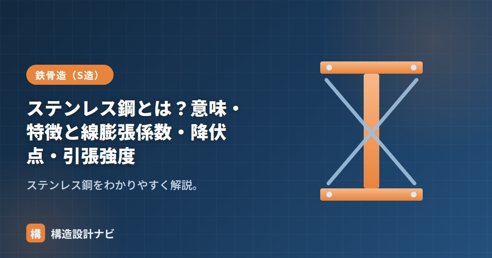

ステンレス鋼とは？意味・特徴と線膨張係数・降伏点・引張強度

ステンレス鋼（英語：stainless steel）とは、クロム（Cr）を約11%以上含み、表面に不動態被膜（酸化クロムの薄い膜）をつくることで錆びにくくした合金鋼です。「stain（さび）」が「less（少ない）」という名前の通り、通常の鉄鋼材料に比べて腐食に強いのが最大の特徴で、代表的な鋼種であるSUS304など、耐食性や意匠性が求められる部位に使われます。
- ステンレス鋼はクロムを多く含み、表面の不動態被膜で錆を防ぐ合金鋼。
- 線膨張係数が普通鋼より大きく、ヤング係数はやや小さいという物性の違いがある。
- 建築構造で使う場合は建築構造用ステンレス鋼材（JIS）などの規格材を用いる。
ステンレス鋼の特徴
- 耐食性：錆びにくく、外装・水回り・海岸近くなど腐食環境に強い。
- 美観・耐久性：意匠材・手すり・サッシなどにも使われる。
- 高コスト：普通鋼より高価で、加工・溶接にも配慮がいる。
不動態被膜は目に見えないほど薄い膜ですが、傷がついても酸素に触れることで自己修復する性質があり、これがステンレス鋼の耐食性の源になっています。ただし塩害環境や隙間腐食が起こりやすい形状では、被膜が破壊されて発錆することもあるため、環境に応じた鋼種の選定が重要です。
種類（系統）の違い
ステンレス鋼にはいくつかの金属組織系統があり、代表的なものにオーステナイト系（SUS304など）、フェライト系、マルテンサイト系があります。建築で最も広く使われるのはオーステナイト系で、耐食性・加工性のバランスがよく、非磁性であることも特徴です。用途やコストに応じて系統を使い分けます。
物性（普通鋼との比較）
構造に使う際は、普通鋼と性質が異なる点に注意が必要です。代表的なオーステナイト系（SUS304など）を例にすると、おおむね次の傾向があります。
| 項目 | 普通鋼（参考） | ステンレス鋼（SUS304系の目安） |
|---|---|---|
| 線膨張係数 | 約12×10⁻⁶/℃ | 約17×10⁻⁶/℃（大きい） |
| ヤング係数 | 約205kN/mm² | 約193kN/mm²（やや小さい） |
| 降伏点（0.2%耐力） | 235〜325N/mm² | 約205N/mm²程度〜 |
| 引張強度 | 400〜490N/mm²級 | 約520N/mm²程度〜 |
線膨張係数が普通鋼より大きいため、温度変化による伸縮が大きく、異種金属と組み合わせる際は熱応力に注意します。引張強度は高い一方、明確な降伏点を示しにくく0.2%耐力で評価します。またヤング係数がやや小さいため、同じ荷重でもたわみが普通鋼よりやや大きくなる点も設計上考慮が必要です。
ステンレス鋼を普通鋼のボルト・金物と直接接触させると、異種金属接触腐食（ガルバニック腐食）が生じることがあります。屋外や湿潤環境で異種金属を組み合わせる場合は、絶縁材の挿入や同系統の金物を選定するなどの対策を検討しましょう。
建築構造での扱い
構造に使う場合は建築構造用ステンレス鋼材（JIS G 4321）などの規格材を用い、許容応力度や接合方法を個別に確認します。一般部材は普通鋼、腐食環境や意匠重視の部位でステンレス鋼、という使い分けが基本です。溶接についても、普通鋼とは異なる溶接材料・入熱管理が必要になるため、専門知識を持つ施工者による施工が求められます。
ステンレスの手すり子を普通鋼のブラケットで留めた納まりを是正した経験がある。表面は錆びていなくても隙間の奥でガルバニック腐食が進んでいることがあるため、異種金属が接する箇所は図面だけでなく現場で実物を確認するようにしている。
なぜさびないのか（不動態皮膜のしくみ）
ここで大事なのは「酸素があること」が前提だという点です。酸素が届かない隙間や、塩分が滞留する場所では皮膜が再生できず、局部的にさびが進みます（すきま腐食・孔食）。海沿いの建物や、プールなど塩素環境では、ステンレスでも腐食が起きるのはこのためです。「ステンレス＝絶対にさびない」ではなく、「条件が整えばさびない」と理解しておくと、設計での判断を誤りません。
建築構造への使いどころとコスト
| 使いどころ | 理由 | 注意点 |
|---|---|---|
| 海沿い・温泉地の外部露出部材 | 塗装の維持管理が困難な環境 | SUS304では不足。SUS316（モリブデン入り）を検討 |
| 屋外階段・手すり・ルーバー | 意匠性と耐久性の両立 | 普通鋼と接触させると異種金属接触腐食が起きる |
| プール・浴場まわり | 高湿・塩素環境 | 応力腐食割れに注意。適切な鋼種選定が必須 |
| アンカーボルト・ビス類 | 取り替えが困難な埋込部 | 母材との電位差を絶縁材で切る |
| 主要な柱・梁 | 基本的に採用されない | 単価が普通鋼の5〜10倍。耐火性も普通鋼と同等以下 |
①線膨張係数が大きい：SUS304の線膨張係数は17.3×10⁻⁶/℃で、普通鋼（11.2×10⁻⁶/℃）の約1.5倍。長い部材を普通鋼に固定すると、温度変化で大きな応力が生じます。ルーバーや手すりでは伸縮を逃がすディテールが必要です。
②熱伝導率が低く耐火性は高くない：ステンレスは高温で強度が落ちにくい面もありますが、耐火構造としては普通鋼と同様に被覆が必要です。「ステンレスだから火に強い」という考えは誤りです。
よくある質問
Q1. ステンレスは本当にさびないのですか？
条件が整えばさびません。表面の不動態皮膜（酸化クロム膜）が酸素と結びついて自己修復するためです。ただし酸素が届かない隙間や、塩分・塩素が滞留する環境では皮膜が再生できず、孔食やすきま腐食が起こります。海沿いではSUS304ではなくSUS316を選ぶなど、環境に応じた鋼種選定が必要です。
Q2. SUS304とSUS316の違いは何ですか？
SUS316はSUS304にモリブデンを2〜3％加えた鋼種で、塩分に対する耐食性が大幅に高くなっています。海岸から近い場所、プール、温泉地などの塩素・塩分環境ではSUS316（またはSUS316L）を選ぶのが標準です。そのぶん単価は上がります。
Q3. ステンレスを主要な柱や梁に使うことはありますか？
特殊な用途を除きほとんどありません。単価が普通鋼の5〜10倍と高く、設計に使える規準・認定も限られるためです。耐久性が問題になる部位だけステンレスにし、主要構造部は普通鋼＋適切な防錆処理とするのが一般的な考え方です。
まとめ
- ステンレス鋼はクロムを多く含み錆びにくい合金鋼（特殊鋼の一種）。
- 線膨張係数が普通鋼より大きく、ヤング係数はやや小さい。降伏点は0.2%耐力で評価。
- 腐食環境・意匠部位で使い、構造用は建築構造用ステンレス鋼材を用いる。
- 異種金属接触腐食など施工上の注意点も踏まえて使い分ける。